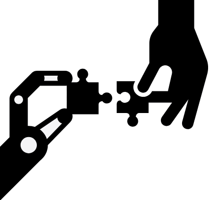

Decisive Team
fast group decision-making
Ask a question. Gather options. Make a decision.
Problem:
Communication overhead is costly.
Coordination problems are costly.
Bad decisions are costly.
Solution:
Decisive Team empowers teams to converge on optimal decisions fast using a simple protocol.
How It Works
Decisive Team is an open-source software tool based on a 3 step decision-making protocol:
1. Ask a question.
Every decision starts with a question. What is our current priority? Who will lead this project? When will we launch?
Decisive Team empowers team members to initiate group decisions simply by asking a clear question.
2. Gather options.
Your decisions can only be as good as your best options. Brainstorming possibilities is a collaborative process.
Decisive Team raises the collective intelligence of the group as a whole by giving everyone the power to propose possible solutions.
3. Make a decision.
Arriving at consensus can be difficult without a clear process. Too much back-and-forth communication slows things down, but not enough communication can lead to sub-optimal decisions.
Decisive Team solves this problem with approval voting. Through approval voting, teams triangulate on optimal decisions fast.
Read more about why approval voting is the optimal method for group decision-making.
Benefits
Fewer meetings.
Less confusion.
Faster turnaround.
Wiser decisions.
Better morale.
Go Beyond Emoji Polls
Informal decision-making methods like Slack emoji polls work fine for low stakes decisions. But emoji polls don't scale. For important decisions, a structured and auditable process is a baseline requirement.
Decisive Team is a robust solution that provides the structure and accountability needed for teams to scale their decision-making process while staying fast.
Human-in-the-loop Automation

Automation is great, but human judgement is often required to keep things running safely and reliably. The Decisive Team API allows automated systems to seamlessly handoff decision-making authority to human decision-makers, and then recieve the results via webhooks when decisions are finalized, enabling powerful hybrid systems.